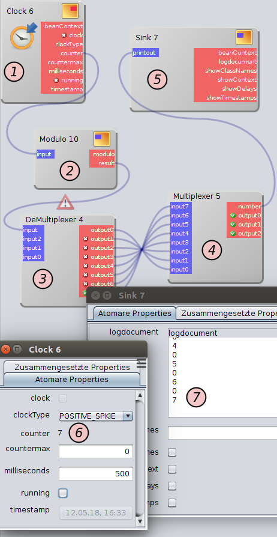
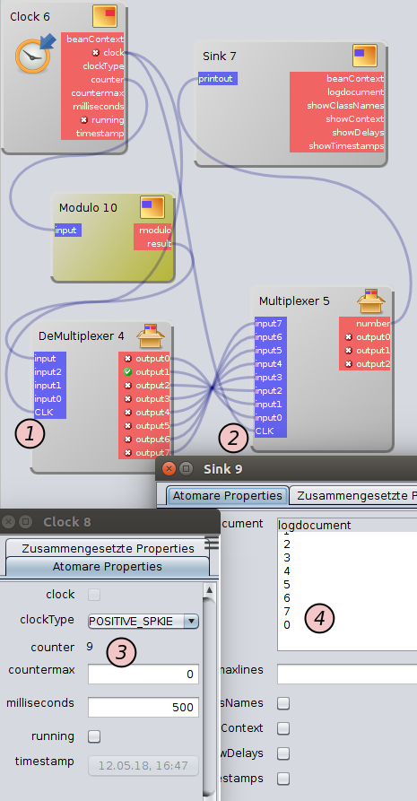

Modul-Wrapper implementiert

Nachdem ich vor einiger Zeit die Planung von Wrappern für Module angekündigt habe, steht die dafür notwendige interne Umbau der Lösung nunmehr vor dem Abschluss...
 Die in der Roadmap skizzierte Idee von State Machines wurde ebenso wie die Idee getakteter Module (speziell für solche, die mittels binärer Logik arbeiten) umgesetzt.
Die in der Roadmap skizzierte Idee von State Machines wurde ebenso wie die Idee getakteter Module (speziell für solche, die mittels binärer Logik arbeiten) umgesetzt.
Zur Zeit wird an der Konsolidierung und Stabilisierung der API gearbeitet. Außerdem müssen noch diverse Unit-Tests für die neue Funktionalität geschrieben werden und die Dokumentation an gewisse aus dem Refactoring resultierende Gegebenheiten angepasst werden. Wenn diese Arbeiten abgeschlossen sind, werden wie gewohnt Beispiele in der Dokumentation der Anwendung abrufbar sein.
Die Umsetzung wurde so vorgenommen, dass der Anwender steuern kann, welche Wrapper zum Einsatz kommen - der Workspace ist nicht darauf festgelegt: Tatsächlich finden sich in gespeicherten Workspaces keine Spuren etwaiger verwendeter Wrapper. So kann man einen Workspace mit einem Wrapper entwerfen, ihn speichern und nach einem Neustart der Anwendung, vor dem die verwendeten Wrapper ausgetauscht wurden, denselben Workspace mit anderen Wrappern benutzen.
Es ist sogar möglich, zum gleichen Zeitpunkt mehrere Wrapper aktiv zu haben - in diesem Fall muss jedes Modul, das von einem Wrapper umhüllt werden soll, eine Annotation tragen, die aussagt, welches der bevorzugte Wrapper ist. Existiert eine solche nicht, wird das betreffende Modul aktuell nicht von einem Wrapper umhüllt.
Es existiert darüber hinaus eine weitere in diesem Kontext sehr wichtige Annotation, die gänzlich und immer verhindert, dass an einem damit ausgezeichneten Modul jemals Wrapper zum Einsatz kommen.
Der Wrapper für die Taktung von Modulen ist wie bereits gesagt besonders nützlich beim Aufbau von Workspaces, die boolesche Operationen kombinieren. Der Wrapper funktioniert so, dass mit jeder steigenden Flanke des Taktsignals die anliegenden Eingangssignale übernommen und verarbeitet werden. Mit jeder fallenden Flanke des Taktsignals werden die Ausgangssignale an nachfolgende Module übergeben.
Der folgende Screenshot zeigt die Probleme, die ohne Taktung auftreten können:

Momentaufnahme eines ungetakteten WorkspaceDas Zählermodul (1) gibt seine Ausgabe an ein Modul (2) weiter, welches in der gegebenen Konfiguration die Folge von Zahlen 0-7 ständig wiederholt. Das Modul (3) dekodiert die Zahl und schaltet einen der 8 zur Verfügung stehenden Ausgänge frei. Das nächste Modul (4) sendet abhängig von der Aktivierung eines Eingangs die Nummer dieses Eingangs an das Anzeigemodul (5). Man sieht (6), dass das Zählermodul im Screenshot bei 7 angekommen ist und das Anzeigemodul dazu synchron läuft. Man sieht aber auch (7), dass im Anzeigemodul Werte auftauchen, die dort nicht sein sollten: jeder zweite am Modul eingehende Wert beträgt 0.
Das kommt daher, dass das Modul 3 bei eingehenden Daten intern zunächst alle Ausgänge auf 0 zurücksetzt und anschließend den korrekten Ausgang abhängig von den eingehenden Daten aktiviert. Dadurch werden aber zwei Nachrichten gesendet - die über die deaktivierung und die über die Aktivierung. Die Nachricht über die Deaktivierung ist für uns aber belanglos.
Nun könnte man natürlich dieses Modul entsprechend anpassen - vorher soll aber demonstriert werden, wie sich das Verhalten ändert, wenn man einen getakteten Workspace benutzt:

Momentaufnahme eines getakteten WorkspaceMan sieht die zwei zusätzlichen Takte an Multiplexer und Demultiplexer (1+2). Man sieht auch, dass die falschen Werte im Anzeigemodul verschwunden sind (4). Allerdings eilt die Anzeige (4) jetzt den Werten des Zählermoduls (3) nach - um genau zwei Werte, was intuitiv der Tatsache geschuldet ist, dass sich zwei getaktete Module in der Kette befinden: Getaktete Module verhalten sich hier wie D-FlipFlops in der realen Welt - sie verzögern den Signallauf.
Artikel, die hierher verlinken
InfluxDB Wrapper für dWb+
29.07.2018
Ich habe hier bereits von ersten Umsetzungen der Idee von Wrappern für Module berichtet. Weitere Wrapper halfen mir bei der Konsolidierung der API vor Veröffentlichung der Dokumentation


Vor 5 Jahren hier im Blog
-
Julia-Mengen mit Shadern umgesetzt
11.08.2019
Nachdem ich begonnen hatte, mich anlässlich der neu erwachten Leidenschaft für das Mandelbrot-Fraktal mit Shaderprogrammierung zu befassen, habe ich ein weiteres verwandtes System in Angriff genommen:
Weiterlesen...
Tags
Android Basteln C und C++ Chaos Datenbanken Docker dWb+ ESP Wifi Garten Geo Git(lab|hub) Go GUI Gui Hardware Java Jupyter Komponenten Links Linux Markdown Markup Music Numerik PKI-X.509-CA Python QBrowser Rants Raspi Revisited Security Software-Test sQLshell TeleGrafana Verschiedenes Video Virtualisierung Windows Upcoming...
Neueste Artikel
- Isochroner Layer in EBMap4D
Nach meiner schnell gehackten Lösung für isochrone Karten in EBMap4D habe ich diese Funktionalität als neuen Layer hinzugefügt
Weiterlesen... - Collations für SQLite mittels BeanShell
Ich habe neulich übere eine Möglichkeit berichtet, SQLite mittels der sQLshell und Beanshell-Skripten um SQL-Funktionen zu erweitern. Ich habe weitere Untersuchungen in dieser Richtung angestellt.
Weiterlesen... - Isochrone Karten mittels Graphhopper
Ich sah neulich auf Mastodon einen Tröt, der nach einer möglichst kostenlosen Möglichkeit fragte, isochrone Karten für beliebige Locations herzustellen.
Weiterlesen...
Manche nennen es Blog, manche Web-Seite - ich schreibe hier hin und wieder über meine Erlebnisse, Rückschläge und Erleuchtungen bei meinen Hobbies.
Wer daran teilhaben und eventuell sogar davon profitieren möchte, muß damit leben, daß ich hin und wieder kleine Ausflüge in Bereiche mache, die nichts mit IT, Administration oder Softwareentwicklung zu tun haben.
Ich wünsche allen Lesern viel Spaß und hin und wieder einen kleinen AHA!-Effekt...
PS: Meine öffentlichen GitHub-Repositories findet man hier - meine öffentlichen GitLab-Repositories finden sich dagegen hier.